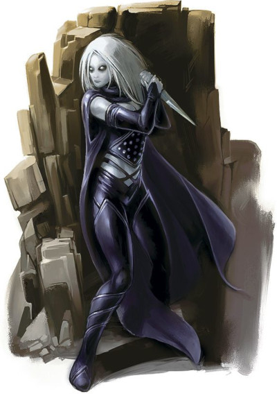
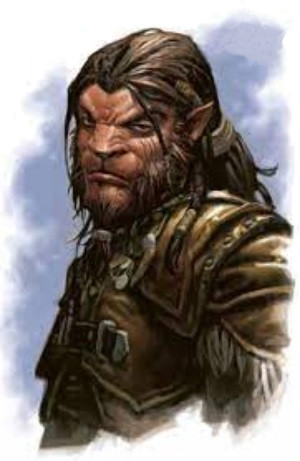
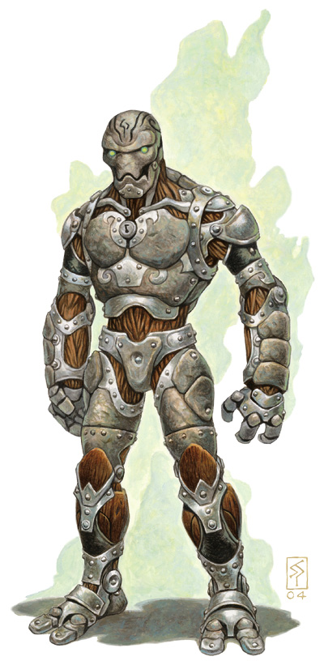

Races d'Eberron
Ce document présente plusieurs races du monde d'Eberron pour D&D :
Changelin
Il y a longtemps, une femme nommée Jes avait cent enfants. Ses rivaux conspiraient contre elle et avaient juré de tous les tuer. Jes supplia ses Souverains de l'aider, mais leur seule réponse fut le vent et la pluie. Puis, alors qu'elle désespérait, un voyageur solitaire lui prit la main.
« Je protégerai tes enfants s'ils suivent mon chemin. Laisse-les découvrir le monde. On les craindra et on les évitera, mais ils ne seront jamais détruits ».
Jes accepta et le voyageur lui donna son manteau. Quand elle drapa ses enfants avec, leur visage s'évanouirent ; ils pouvaient être ce qu'ils voulaient être. Et cela resta ainsi. Bien que les enfants soient rejetés par tous, le cadeau du voyageur les protège encore.
— Chance, prêtre changelin
Un changelin peut transformer son visage et son apparence par la pensée. Nombre d'entre-eux utilisent ce don comme une forme d'expression artistique et émotionnelle, mais c'est aussi un outil précieux pour les arnaqueurs, les espions et tous ceux qui veulent tromper. C'est ce qui conduit beaucoup de gens à traiter les changelins avec crainte et suspicion.
Noms de changelins
Un changelin peut utiliser un nom différent pour chaque masque et chaque personnage, adoptant de nouveaux noms aussi facilement qu'il développe de nouveaux visages. Le vrai nom d'un changelin a tendance à être monosyllabique mais les accents de ces noms s'expriment souvent à travers la métamorphose, quelque chose que les non-métamorphes ne remarqueront probablement pas. Par exemple, deux changelins pourraient avoir le nom de Jin, mais l'un est Jin avec des yeux bleus et vifs alors que l'autre est Jin avec des joues dorées. Les changelins ont une relation fluide avec le genre, le voyant comme une caractéristique qui se change comme beaucoup d'autres.
Noms changelins : Bin, Cas, Dox, Fie, Hars, Jin, Lam, Mas, Nix, Ot, Paik, Ruz, Sim, Toox, Vil, Yug.
Traits
Votre personnage changelin possède les traits suivants.
Augmentation de caractéristiques. Votre Charisme augmente de 2, et votre Dextérité ou votre Intelligence de 1 (au choix).
Âge. Les changelins deviennent matures légèrement plus vite que les humains avec lesquels ils partagent une espérance de vie similaire, typiquement un siècle ou moins. Même si un changelin peut se métamorphoser pour cacher son âge, les effets du vieillissement le rattrapent encore.
Alignement. Les changelins détestent être liés de quelque manière que ce soit, et ceux qui suivent la voie du Voyageur pensent profondément que le chaos et les changements sont des aspects importants de la vie. La plupart tendent vers une neutralité pragmatique au lieu d'être préoccupés par de nobles idéaux. Peu de changelins sont mauvais.
Taille. Sous leur forme naturelle, les changelins mesurent entre 1,50 et 1,80 mètre. Ils sont de constitution mince. Votre taille est Moyenne.
Vitesse. Votre vitesse de base est de 9 mètres.
Changement d'apparence. Par une action, vous pouvez transformer votre apparence ou revenir à votre forme naturelle. Vous ne pouvez pas reproduire l'apparence d'une créature que vous n'avez jamais vue, et vous revenez à votre forme naturelle si vous mourez. Vous décidez de l'apparence que vous voulez prendre, en particulier la taille, le poids, les traits de votre visage, le son de votre voix, la couleur de votre peau, la longueur de vos cheveux, le sexe et toute autre caractéristique distinctive. Vous pouvez apparaître comme un étant membre d'une autre race, même si aucune de vos statistiques de jeu ne change. Vous ne pouvez pas non plus apparaître comme étant une créature d'une taille différente de la vôtre, et votre forme de base reste la même ; si vous êtes bipède, vous ne pouvez pas utiliser ce trait pour devenir quadrupède par exemple. Vos vêtements et autres équipements ne changent pas d'apparence, de taille ou de forme pour correspondre à votre nouvelle forme, ce qui vous oblige à avoir quelques tenues supplémentaires à portée de main pour parfaire votre déguisement. Même pour les observateurs les plus aguerris, votre ruse est généralement indiscernable. Si vous éveillez les soupçons, ou si une créature particulièrement méfiante soupçonne quelque chose, vous avez un avantage à vos jets de Charisme (Tromperie) pour éviter d'être détecté.
Instincts de changelin. Vous gagnez la maîtrise de deux des compétences suivantes de votre choix : Intimidation, Intuition, Persuasion ou Tromperie.
Visage dérangeant. Quand une créature que vous pouvez voir effectue un jet d'attaque contre vous, vous pouvez utiliser votre réaction pour infliger un désavantage à ce jet. Vous devez utiliser cette capacité avant de savoir si l'attaque touche ou non. L'utilisation de ce trait révèle votre nature métamorphe à toute créature dans un rayon de 9 mètres qui peut vous voir. Une fois que vous avez utilisé ce trait, vous ne pouvez plus l'utiliser avant d'avoir terminé un repos court ou long.
Personnage divergent. Vous gagnez la maîtrise d'un outil de votre choix. Définissez un personnage associé à cette maîtrise (nom, race, sexe, âge et autres détails). Lorsque vous êtes sous la forme de cette personne, vous doublez votre bonus de maîtrise pour tout jet de caractéristique qui utilise cette compétence.
Langues. Vous pouvez parler, lire et écrire le commun et deux autres langues de votre choix.
Kalashtar
Je suis un kalashtar, né de deux mondes. Il y a plus de mille ans, mon ancêtre a uni sa lignée à l'esprit Kashtai, et je suis une enfant de cette union. Kashtai bouge en moi. Ses souvenirs me viennent en rêves et parfois sa voix murmure dans le silence de mon esprit. Tant qu'au moins une de mes sœurs sera vivante, Kashtai survivra, et tant qu'elle vivra, elle se battra contre Il-Lashtavar.
— Lakashtai, disciple de la lumière
Les kalashtars sont une race composée créée à partir de l'union de l'humanité avec des esprits renégats du plan des rêves, des esprits appelés les quoriens. Les kalashtars sont souvent perçus comme des personnes sages et spirituelles qui ont une grande compassion pour les autres. Mais les kalashtars sont immanquablement des extraterrestres, et ils sont hantés par les conflits de leurs esprits d'un autre monde.
Noms de kalashtars
Un nom kalashtar est formé par le mélange d'un préfixe personnel lié au nom de l'esprit quorien à l'intérieur du kalashtar. Chaque esprit a une identité de genre, mais cela peut correspondre ou non à l'identité de genre de l'hôte kalashtar. Ainsi, une kalashtar pourrait avoir ce que les autres considéreraient comme un nom masculin, parce qu'elle est liée à un esprit avec une identité masculine. Les kalashtars orphelins ne connaissent généralement pas le nom de leur esprit et préfèrent prendre des noms issus des cultures dans lesquelles ils sont élevés.
Noms quoriens masculins : Hareth, Khad, Kosh, Melk, Tash, Ulad, Vash.
Noms quoriens féminins : Ashana, Ashtai, Ishara, Nari, Tana, Tari, Vakri.
Noms kalashtars : Coratash, Dalavash, Dolishara, Halakosh, Khoratari, Koratana, Lanhareth, Molavakri, Nevitash, Sorashana, Torashtai, Valakhad, Vishara.
Traits
Votre personnage kalashtar possède les traits suivants.
Augmentation de caractéristiques. Votre Sagesse et votre Charisme augmentent de 1. De plus, vous augmentez une caractéristique de votre choix de 1.
Âge. Les kalashtars grandissent au même rythme que les humains et ont une espérance de vie similaire.
Alignement. L'esprit noble lié à un kalashtar le pousse vers un comportement loyal et bon. La plupart des kalashtars combinent l'autodiscipline avec la compassion pour tous les êtres sensibles, mais certains kalashtars résistent à l'influence vertueuse de leur esprit.
Taille. Les kalashtars sont semblables en constitution aux humains, bien qu'ils soient typiquement quelques centimètres plus grands. Votre taille est Moyenne.
Vitesse. Votre vitesse de base est de 9 mètres.
Dualité. Lorsque vous effectuez un jet de sauvegarde de Sagesse, vous pouvez utiliser votre réaction pour obtenir un avantage sur le jet. Vous pouvez utiliser ce trait immédiatement avant ou après avoir lancé les dés, mais avant que les effets du jet ne se produisent.
Discipline mental. Vous avez la résistance aux dégâts psychiques.
Lien de l'esprit. Vous pouvez parler télépathiquement à n'importe quelle créature que vous pouvez voir dans un rayon de 18 mètres autour de vous. Vous n'avez pas besoin d'avoir une langue en commun avec la créature pour qu'elle comprenne vos messages télépathiques, mais la créature doit être capable de comprendre au moins une langue ou être elle-même télépathe. Par une action bonus, lorsque vous parlez par télépathie à une créature, vous pouvez lui donner la possibilité de vous parler télépathiquement jusqu'au début de votre prochain tour. Pour utiliser cette capacité, la créature doit être à 18 mètres ou moins de vous et être capable de vous voir.
Glamour psychique. Choisissez l'une des compétences suivantes : Intimidation, Intuition, Représentation ou Persuasion. Vous avez un avantage à tous vos jets de caractéristique faits avec cette compétence.
Séparé des rêves. Les kalashtars dorment mais ne se connectent pas au plan des rêves comme les autres créatures. Au lieu de cela, leur esprit puise dans les souvenirs de leur esprit d'un autre monde pendant leur sommeil. En tant que tel, vous êtes immunisé contre les sorts et autres effets magiques qui vous obligent à rêver, comme le sort rêve, mais pas aux sorts et aux effets qui vous endorment, comme le sort de sommeil.
Langues. Vous pouvez parler, lire et écrire le commun, le quorien et une autre langue de votre choix.
Féral
L'héritage de Geth grandit au plus profond de lui, depuis le cœur de son être. Chez certains férals apparaissaient de terribles griffes ou d'énormes crocs, d'autres se voyaient doter d'une vitesse étonnante ou de sens accrus. Le don que Geth avait recu de ses ancêtres lycanthropes était une rudesse absolue. La force s'infiltra dans ses os et inonda sa chair. Sa peau durcit et ses cheveux devinrent comme la peau dure d'un animal. Un sentiment d'invincibilité se répandait en lui. Pour le moment, au moins, il sentait que personne ne pouvait l'arrêter !
— Don Bassingthwaite, The Binding Stone
Les férals [ou féraux, les deux orthographes sont correctes] sont les descendants d'humains et de lycanthropes. Ce sont des humanoïdes avec un aspect bestial. Bien qu'ils ne puissent pas changer complètement de forme, ils peuvent améliorer temporairement leurs capacités animales ; un état qu'ils appellent le changement. Quelles que soient leurs origines, les férals ont évolué pour devenir une race unique. Un féral marche sur la lame du couteau entre les mondes sauvages et la civilisation. Quel bord choisira leur instinct primitif ?
Noms de férals
Les férals n'ont pas de langue propre et vivent souvent dans des communautés mixtes. En tant que tel, leurs noms sont généralement issus de noms d'autres cultures dans leur région. De nombreux férals réservent leurs vrais noms pour leurs amis et utilisent des « noms errants » avec des inconnus. Ces noms sont généralement liés à un trait physique ou de personnalité évident.
Noms férlas : Agile, Blaireau, Chat, Cicatrice, Crocs, Grâce, Loup, Lune, Moustaches, Ours, Pluie, Rayé, Rouge, Sinistre.
Traits
Votre personnage féral possède les traits suivants.
Augmentation de caractéristiques. Votre Dextérité augmente de 1.
Âge. Les férals parviennent rapidement à leur maturité physique et émotionnelle, atteignant le stade adulte à l'âge de 10 ans. Ils vivent rarement au-delà de 70 ans.
Alignement. Les férals tendent vers la neutralité, étant plus axés sur la survie que sur les concepts de bien et de mal. Un amour pour leur liberté peut les conduire vers des alignements chaotiques.
Taille. Les férals mesurent entre 1,50 et 2,10 mètres suivant leur sous-race. Votre taille est Moyenne.
Vitesse. Votre vitesse de base est de 9 mètres.
Vision dans le noir. Vous pouvez voir avec une lumière faible jusqu'à 18 mètres comme vous verriez avec une lumière vive, et dans le noir comme vous verriez avec une lumière faible. Dans le noir, vous ne discernez pas les couleurs, uniquement des nuances de gris.
Sens aiguisés. Vous maîtrisez la compétence Perception.
Changement. Par une action bonus, vous pouvez prendre une apparence plus bestiale. La transformation dure 1 minute, jusqu'à ce que vous mouriez, ou jusqu'à ce que vous reveniez à votre apparence normale par une action bonus. Pendant le changement, vous gagnez des points de vie temporaires égaux à votre niveau + votre bonus de Constitution (minimum 1 pv temporaire). Vous gagnez aussi des caractéristiques qui dépendent de votre sous-race de féral (voir ci-dessous). Vous devez terminer un repos court ou long avant de pouvoir utiliser à nouveau la capacité de Changement.
Langues. Vous pouvez parler, lire et écrire le commun.
Sous-race. Choisissez l'une des sous-races suivantes, qui représente votre bête intérieure : peau de bête, longues dents, longue foulée ou traque sauvage.
Peau de bête
En tant que féral peau de bête, vous êtes spécialement résistant dans la bataille.
Augmentation de caractéristiques. Votre Constitution augmente de 2.
Robuste. Vous maîtrisez la compétence Athlétisme.
Capacité de changement. Lors de votre changement, vous gagnez 1d6 points de vie temporaires additionnels et un bonus de +1 a la CA.
Longues dents
En tant que féral longues dents, vous êtes un combattant féroce.
Augmentation de caractéristiques. Votre Force augmente de 2.
Furieux. Vous maîtrisez la compétence Intimidation.
Capacité de changement. Pendant votre changement, vous pouvez utiliser vos crocs pour réaliser une attaque à mains nues avec une action bonus. Si vous touchez, vous infligez 1d6 + votre modificateur de Force de dégâts perforants au lieu des dégâts contondants classiques d'une attaque à mains nues.
Longue foulée
Les férals longue foulée sont aériens et insaisissables.
Augmentation de caractéristiques. Votre Dextérité et votre Charisme augmentent de 1.
Gracieux. Vous maîtrisez la compétence Acrobaties.
Foulée rapide. Votre vitesse de marche augmente de 1,50 mètre.
Capacité de changement. Pendant votre changement, votre vitesse de marche augmente de 1,50 mètre. De plus, vous pouvez vous déplacer de 3 mètres en réaction à un ennemi qui termine son tour à 1,50 mètre ou moins de vous. Ce mouvement ne provoque pas d'attaques d'opportunité.
Traque sauvage
Votre héritage de traque sauvage fait de vous un expert du pistage et de la survie.
Augmentation de caractéristiques. Votre Sagesse augmente de 2.
Traqueur inné. Vous maîtrisez la compétence Survie.
Fixer le parfum. Par une action bonus, vous pouvez marquer une créature que vous pouvez voir dans un rayon de 3 mètres autour de vous. Jusqu'à la fin de votre prochain repos long, votre bonus de maîtrise est doublé pour tout jet de caractéristique que vous faites pour retrouver la créature marquée, et vous connaissez toujours l'emplacement de cette créature si elle se trouve à 18 mètres ou moins de vous. Vous ne pouvez plus utiliser ce trait jusqu'à ce que vous ayez fini un repos court ou long.
Capacité de changement. Pendant votre changement, vous gagnez un avantage aux jets de Sagesse.
Forgelier
« Pierce est le fruit d'une conception, toi tu as été construit par accident » déclara Lakashtai.
« C'est l'âme qui compte, pas la forme du navire »
« Qu'est-ce qui te fait penser qu'il a une âme ? » dit Gerrion.
« Qu'est-ce qui te fait penser que tu en as une ? »
— Keith Baker, The Shattered Land
Les forgeliers ont été construits pour se battre lors de la Dernière guerre. Les premiers d'entre-eux étaient des automates stupides, mais la Maison Cannith a mobilisé d'énormes moyens afin d'améliorer ces soldats d'acier. Une avancée inattendue a alors produit des soldats pleinement conscients à base de matériaux organiques et inorganiques. Les forgeliers peuvent être fabriqués à partir de bois et de métal, et ressentir de la douleur et de l'émotion. Construits comme des armes, ils doivent maintenant se trouver un but après la guerre. Un forgelier peut être un inébranlable allié, une machine à tuer au cœur froid, ou un visionnaire en quête de but et de sens.
Personnalité d'un forgelier
Version officielle d'Eberron: Risen from the Last War de cette race publiée initialement dans la rubrique Unearthed Arcana.
Les forgeliers ont été construits pour servir et combattre. Durant la majeure partie de leur existence, les forgeliers ont eu une fonction clairement définie et étaient encouragés à se concentrer uniquement sur ce rôle. Le traité de Thronehold les a alors libérés, mais beaucoup ont encore du mal à trouver leur place dans le monde d'après-guerre et à se lier aux créatures qui les ont créés. Un forgelier typique montre peu d'émotion. Nombre d'entre-eux se fixent un objectif concret, comme protéger des alliés, conclure un contrat ou explorer une terre, et ils se consacrent à cette tâche comme ils faisaient la guerre. Cependant, certains aiment aussi explorer leurs sentiments, leur liberté et leurs relations avec les autres. La plupart des forgeliers n'ont aucun intérêt pour la religion, mais certains embrassent la foi et le mysticisme, à la recherche d'un but plus spirituel et d'un sens plus profond.
Le forgelier typique a un corps asexué. Certains ignorent totalement le concept de genre, et d'autres adoptent une identité de genre. En fait, plus un forgelier développe son individualité, plus il est susceptible de modifier son corps, cherchant alors un artificier pour personnaliser l'apparence de son visage, de ses membres et de son blindage.
Excentricités
Les forgeliers affichent souvent un ou deux traits de personnalité étranges, dû au fait qu'ils soient nouveaux dans le monde. La table ci-dessous propose des exemples d'excentricités.
| d8 | Excentricité |
| 1 | Vous analysez à haute voix la menace potentielle posée par chaque créature que vous rencontrez. |
| 2 | Vous interprétez souvent mal les indices émotionnels. |
| 3 | Vous êtes un farouche protecteur de vos amis. |
| 4 | Vous essayez d'appliquer la discipline de guerre à chaque situation. |
| 5 | Vous ne savez pas gérer vos sentiments et êtes sujet à des explosions émotionnelles dramatiques. |
| 6 | Vous ne comprenez pas l'utilité des vêtements et supposez qu'ils dénotent la fonction d'une personne. |
| 7 | Vous êtes obsédé par votre apparence et vous vous polissez constamment. |
| 8 | La guerre est la seule chose qui a du sens pour vous ; vous êtes toujours à la recherche d'un combat. |
Noms de forgeliers
On assigne aux forgeliers des désignations numériques pour leur usage militaire. Mais beaucoup d'entre eux adoptent des surnoms, souvent donnés par leurs camarades. En tant qu'individus libres, certains ont choisi de nouveaux noms pour exprimer leur chemin dans la vie. Quelques-uns prennent des noms humains, souvent le nom d'un ami disparu ou d'un mentor.
Noms forgeliers : Anchor, Banner, Bastion, Blade, Blue, Bow, Cart, Church, Crunch, Crystal, Dagger, Dent, Five, Glaive, Hammer, Iron, Lucky, Mace, Oak, Onyx, Pants, Pierce, Red, Rod, Rusty, Scout, Seven, Shield, Slash, Smith, Spike, Temple, Vault, Wall.
Traits
Votre personnage forgelier possède les traits suivants.
Augmentation de caractéristiques. Votre Constitution augmente de 2 et une autre caractéristique de votre choix augmente de 1.
Âge. Un forgelier typique a entre deux et trente ans. La durée de vie maximale d'un forgelier reste un mystère ; jusqu'à présent les forgeliers n'ont montré aucun signe de détérioration à cause de l'âge. Vous êtes immunisé contre les effets de l'âge.
Alignement. La plupart des forgeliers aiment l'ordre et la discipline, tendant vers la loi et la neutralité, mais certains adoptent la moralité (ou son absence) des êtres avec lesquels ils ont servi.
Taille. Votre taille est Moyenne. Pour déterminer votre taille et votre poids, vous pouvez utiliser la table suivante :
Race |
Taille de base |
Modificateur de taille (cm) |
Poids de base |
Modificateur de poids (kg) |
| Forgelier | 1,80 m | +2d6 x 2,50 | 120 kg | +2d6 x 2 |
Vitesse. Votre vitesse de base est de 9 mètres.
Résistance des forgeliers. Vous avez été créé pour avoir une force étonnante, qui est représentée par les avantages suivants :
- Vous avez un avantage aux jets de sauvegarde contre l'état empoisonné et la résistance aux dégâts de poison.
- Vous n'avez pas besoin de manger, ni de boire ni de respirer.
- Vous êtes immunisé contre les maladies.
- Vous n'avez pas besoin de dormir et la magie ne peut pas vous endormir.
Repos de la sentinelle. Lorsque vous prenez un repos long, vous devez passer au moins six heures dans un état inactif et immobile plutôt que de dormir. Dans cet état, vous semblez inerte, mais cela ne vous rend pas inconscient, et vous pouvez voir et entendre normalement.
Protection intégrée. Votre corps possède des couches de protection intégrée qui peuvent être améliorées par une armure :
- Vous gagnez un bonus de +1 à la Classe d'Armure.
- Vous ne pouvez mettre une armure que si vous la maîtrisez. Pour mettre une armure, vous devez l'incorporer à votre corps. Cela vous prend 1 heure, durant laquelle vous restez en contact avec l'armure. Quitter une armure vous prend également 1 heure. Vous pouvez vous reposer pendant que vous mettez ou quittez une armure de cette manière.
- Tant que vous êtes en vie, votre armure ne peut pas être quittée de votre corps contre votre volonté.
Conception spécialisée. Vous obtenez la maîtrise d'une compétence de votre choix et d'un outil de votre choix.
Langues. Vous pouvez parler, lire et écrire le commun et une autre langue de votre choix.
Écrit par Mike Mearls, traduit par ben, kevetoile et blueace